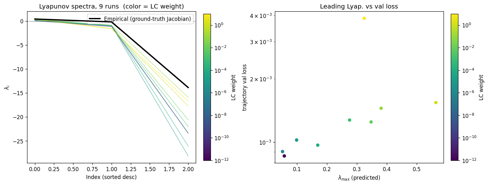
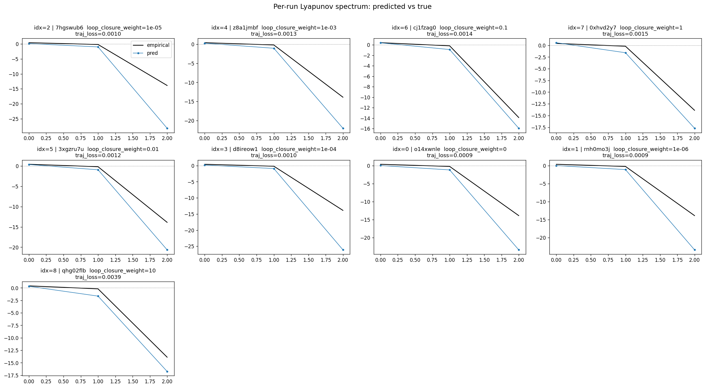
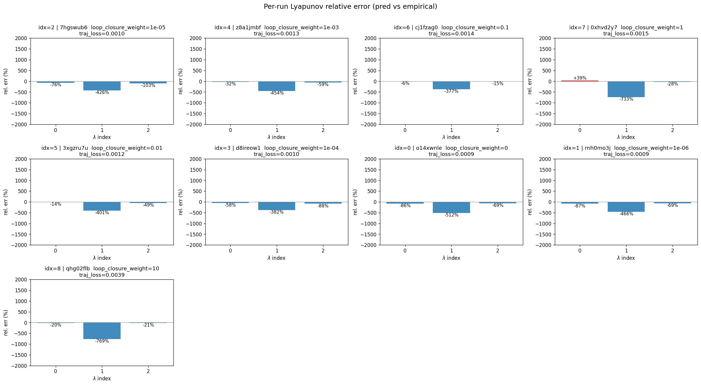

lorenz_partial_25d_additive_gennmse_obsnoise001__lc_sweepProject: Lorenz_INDpartial_N25_D1_NormTrue_T3__JacobianODE
Launched: 2026-04-17T15:20:10Z
Completed: 2026-04-17T18:50:13Z
Outcome: complete_clean
Git: latent-JacobianODE @ fd26c55
Expected runs: 9
lorenz_partial_25d_additive_gennmseDescription
Partial-obs Lorenz: observe only x (index 0), n_delays=25, delay_spacing=1. Encoder input: 25-D delay vector. Dynamic latent: 3-D (z_dyn). Null subspace: 22-D with kl_null_weight=0 (no structural penalty, per the additive+zero_init design). Joint training of encoder + Jacobian dynamics from the start; active loss terms: decoded-prediction (trajectory) + latent-prediction + reconstruction + loop-closure, all with gennMSE. Reconstruction mode = most_recent so recon + decoded-trajectory losses score only the current-time frame, not the older lags (avoids the redundant-target / thin-direction pathology flagged in the recent partial-obs hypothesis). obs_noise_scale=0. Uses the clean-encoding LPL target fix (no-op here since obs_noise=0, but kept for consistency).
Hypothesis
With loop closure enforcing encoder invertibility, the latent dynamics should be diffeomorphism-conjugate to the true Lorenz flow, preserving its Lyapunov spectrum (λ ≈ [0.91, 0, -14.57]) despite observing only x(t). The optimal LC weight likely sits in the 1e-3..1e-1 range (full-obs sweep peaked at 1e-1 with spectrum_mse ≈ 0.011). Free-running rollouts in observation space should be chaotic with long-run statistics matching the training data.
Open risk from the partial-obs sufficient-statistic hypothesis: the only hard constraint on z_dyn information content is reconstructing the current frame, so the encoder may dump history into z_null rather than surfacing it in z_dyn. Loop closure + LPL should apply counterbalancing pressure; if they don't, we'd see high traj_val loss / spectrum mismatch and know to revisit the loss design.
Success criteria
Overall best MASE: 0.5354 (LC weight = 0.0e+00, obs_noise_scale = 0.00) Overall best traj loss: 0.00086 at epoch 169.0 Runs analyzed: 9
obs_noise_scale| obs_noise_scale | Best LC weight | Best traj loss | MASE at best | R² | LC loss | epoch |
|---|---|---|---|---|---|---|
| 0.0 | 0.0e+00 | 0.00086 | 0.5354 | 0.9992 | 7.134 | 169.0 |
| Criterion | Verdict | Note |
|---|---|---|
| Best run's leading Lyapunov exponent > 0 (chaos recovered) | Unknown | |
| Best run's predicted Lyapunov spectrum within ~30% of empirical | Unknown | |
| Best run's free-running sliced-Wasserstein-1 to training data distribution is low (sanity: obs histograms overlap) | Unknown | |
| val/trajectory_r2_score > 0.9 at the best configuration | Pass | Best R² = 0.9992; threshold > 0.9 |
| Loop closure bounded and monotonically improving at low LC | Unknown |
Automated verdicts use simple numeric-threshold parsing and may mis-classify qualitative criteria. The Discussion section below takes precedence.



(to be written)